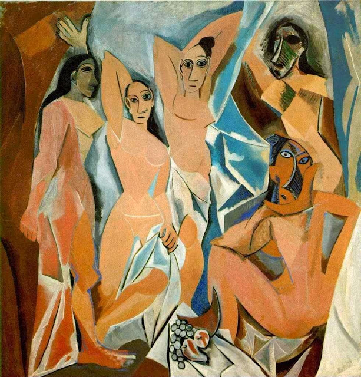

Información General
Ubicación: Nueva York, EE. UU.
Horario: 10:30 - 17:30
Precio: $25 USD
Colecciones Destacadas
- La noche estrellada
- La persistencia de la memoria
- Las señoritas de Avignon
Historia y Arquitectura
Fundado en 1929, el MoMA revolucionó el concepto de museo con su enfoque en el arte moderno y contemporáneo. Su edificio de líneas limpias y vidrio refleja la esencia del diseño minimalista neoyorquino.

Obra: La noche estrellada

Obra: La persistencia de la memoria

Obra: Las señoritas de Avignon